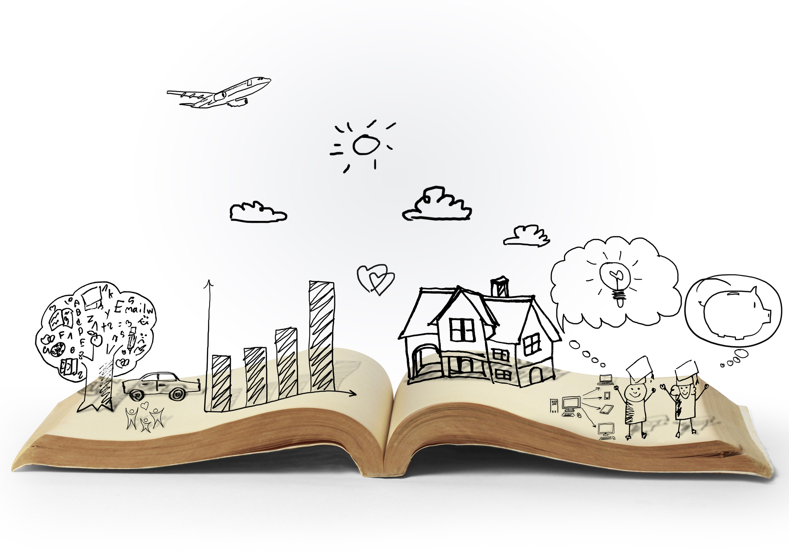
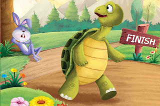
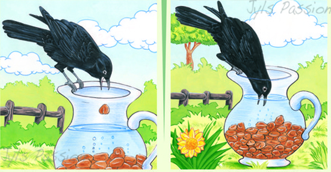
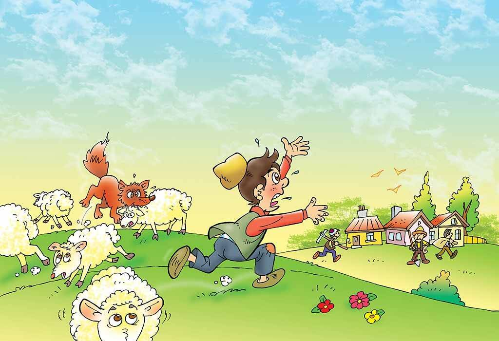
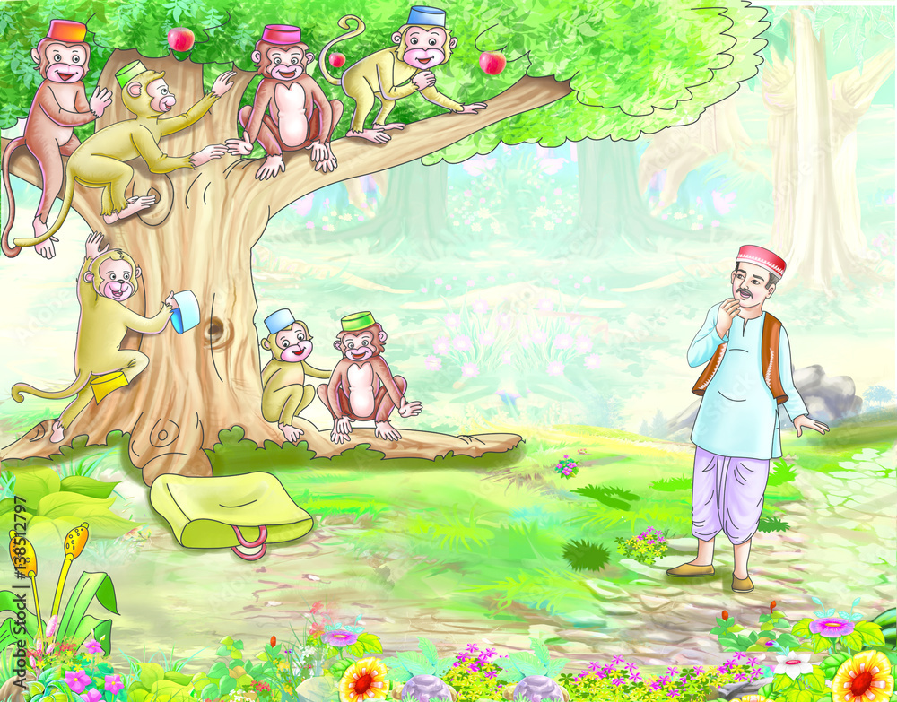
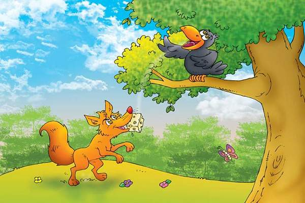

Storytelling brings language learning alive and creates a participatory and immersive experience
that allows Young Learners to enjoy hearing the language in a dynamic, sometimes stylistic and entertaining way.
Participation using key vocabulary and phrases can create an awareness of rhythm and structure.
Searching for some funny stories for kids to read.
Explain the moral value of these stories to your child one by one.
Your kids will love these
Turtel And Rabbit Race

Once upon a time a Turtl and a Rabbit had an argument about who was faster.
They decided to settle the argument with a race. They agreed on a route and started off the race.
The rabbit shot ahead and ran briskly for some time. Then seeing that he was far ahead of the turtle,
he thought he'd sit under a tree for some time and relax before continuing the race. He sat under the tree and soon fell asleep.
The turtle plodding on overtook him and
soon finished the race, emerging as the undisputed champ. The rabbit woke up and realized that he'd lost the race.
The Thirsty Crow

It was a hot summer's day. A thirsty crow flew into a village searching for some water to drink.
He flew over houses, fields and trees but he could not find any water. After a long time, he came across a farm.
Under one of the trees on the farm was a pot of water. There was very little water in the pot.
The crow tried to reach the o do so as water but he was not able to do so as the neck of the pot was very narrow.
He then tried to push the pot down for the water to flow out but the pot was too heavy for him.
The crow looked around. He saw some pebbles. An idea struck in his mind. He picked up the pebbles one by one and dropped them into the pot.
As he dropped the pebbles into the pot, the water came up. Soon it was high enough for him to drink. He drank the water.
He flew away happily.
The Boy Who Cried Wolf

Once upon a time, there lived a shepherd boy who was bored watching his flock of sheep on the hill. To amuse himself, he shouted,
"Wolf! Wolf! The sheep are being chased by the wolf!". The villagers came running to help the boy and save the sheep.
They found nothing and the boy just laughed looking at their angry faces.
"Don't cry 'wolf' when there's no wolf boy!", they said angrily and left. The boy just laughed at them.
After a while, he got bored and cried 'wolf!' again, fooling the villagers a second time. The angry villagers warned the boy a second time and left.
The boy continued watching the flock.
After a while, he saw a real wolf and cried loudly,"Wolf! Please help! The wolf is chasing the sheep. Help!"
But this time, no one turned up to help. By evening, when the boy didn’t return home, the villagers wondered
what happened to him and went up the hill. The boy sat on the hill weeping.
"Why didn't you come when I called out that there was a wolf?" he asked angrily. "The flock is scattered now", he said.
An old villager approached him and said, “People won’t believe liars even when they tell the truth.
We'll look for your sheep tomorrow morning. Let's go home now".
The Hat seller and the Monkeys

It was a hot day. A cap seller was going to a fair to sell his caps.
His way lay through a thick forest and he was so tired, so he decided to take some rest under a big shady tree.
Soon he was fast asleep. There lived many monkeys on the tree. They saw him wearing a cap on his head. They came down,
opened his bundle and took the caps and wore them on their heads. Then they climbed up on the high branches of the tree.
After some time, the cap seller woke up. He found his caps not there. The caps were missing. He felt very gloomy and looked around for them.
All of a sudden, he looked up and saw the monkeys wearing the caps.
An idea struck his mind. He at once took off his own cap and threw it on the ground.
He knew that monkeys are good imitators.
The monkeys also threw their caps down. He collected all his caps and went his way to the fair.
The Fox and the Crow

One day a Crow found a large piece of cheese. She sat in a tree and wanted to eat it, but suddenly she saw a fox.
The Fox came up to the tree. He looked up and saw the Crow. He saw a large piece of cheese also.
The Fox wanted to get the cheese. He had a good plan in his mind.
He says: "How beautiful you are, Mrs. Crow! You have such big eyes and a beautiful nose. Your feathers are nice too.
What a pity you cannot sing to show your voice."
The Crows opened her mouth and says, "But I CAN sing. Caw! Caw!" When the Crow opened her mouth, the piece of cheese fell out.
The Fox ran up to the cheese and ate it.
"Thank you very much," fox says. The cheese was good. And you can sing well. What a pity don't think well." And the Fox ran away.